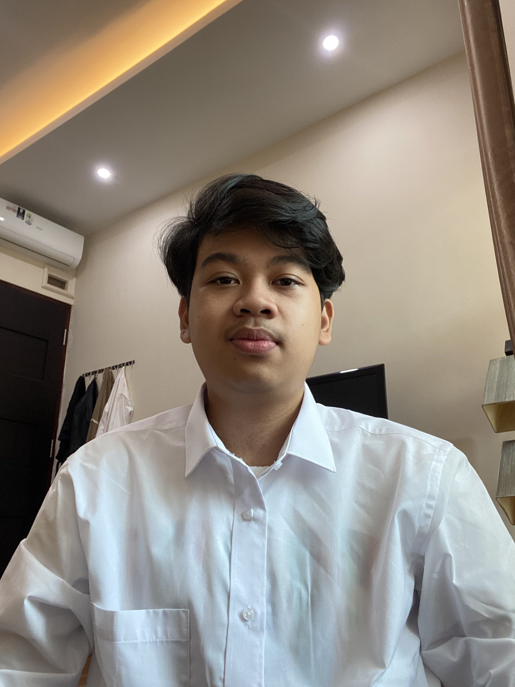

Informasi Pribadi

Nama: Muh. Farhan Dwi Aditiya P
Tempat, Tanggal Lahir: Batam, 1 Oktober 2004
Email: putramfda22d@student.unhas.ac.id
No Telepon: 081374793780
Pendidikan
-
SMA Kartini Batam
2019 - 2022 -
Universitas Hasanuddin
Program Studi Teknik Informatika
2022 - Sekarang
Riwayat Hidup
-
Posisi: Pengalaman Non-Akademik
Diselenggarakan oleh: Garena Indonesia
Juara 2 Major Series
Tahun: 2023 -
Posisi: Pengalaman Non-Akademik
Diselenggarakan oleh: Telkomsel melalui Dunia Games
Juara 1 IGC Champion
Tahun: 2020